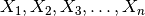
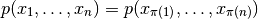
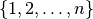
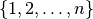

User Guide¶
Permutation tests (sometimes referred to as randomization, re-randomization, or exact tests) are a nonparametric approach to statistical significance testing. They were first introduced by R. A. Fisher in 1935 [Fis35] and further developed by E. J. G. Pitman [Pit37][Pit38]. After the introduction of the bootstrap, the ideas were extended in the 1980’s by J. Romano [Rom88][Rom89].
Permutation tests were developed to test hypotheses for which relabeling the observed data was justified by exchangeability [1] of the observed random variables. In these situations, the conditional distribution of the test statistic under the null hypothesis is completely determined by the fact that all relabelings of the data are equally likely. That distribution might be calculable in closed form; if not, it can be simulated with arbitrary accuracy by generating relabelings uniformly at random. In contrast to approximate parametric methods or asymptotic methods, the accuracy of the simulation for any finite (re)sample size is known, and can be made arbitrarily small at the expense of computing time.
More generally, permutation tests are possible whenever the null
distribution of the data is invariant under the action of some group
(see Appendix [app:def] for background). Then, a subset of outcomes is
conditionally equally likely, given that the data fall in a particular
orbit of the group (all potential observations that result from
applying elements of the group to the observed value of the data). That
makes it possible to determine the conditional distribution of any test
statistic, given the orbit of the data. Since the conditional
distribution is uniform on the orbit of the original data, the
probability of any event is the proportion of possible outcomes that lie
in the event. If tests are performed conditionally at level
 regardless of the observed data, the resulting overall
test has unconditional level , by the law of total
probability.
regardless of the observed data, the resulting overall
test has unconditional level , by the law of total
probability.
Footnotes
| [1] | A sequence  of random variables is exchangeable if their joint distribution is invariant to permutations of the indices; that is,  for all permutations |
 of . It is closely related to the
notion of independent and identically-distributed random variables.
Independent and identically-distributed random variables are exchangeable.
However, simple random sampling without replacement produces an
exchangeable, but not independent, sequence of random variables.
of . It is closely related to the
notion of independent and identically-distributed random variables.
Independent and identically-distributed random variables are exchangeable.
However, simple random sampling without replacement produces an
exchangeable, but not independent, sequence of random variables.